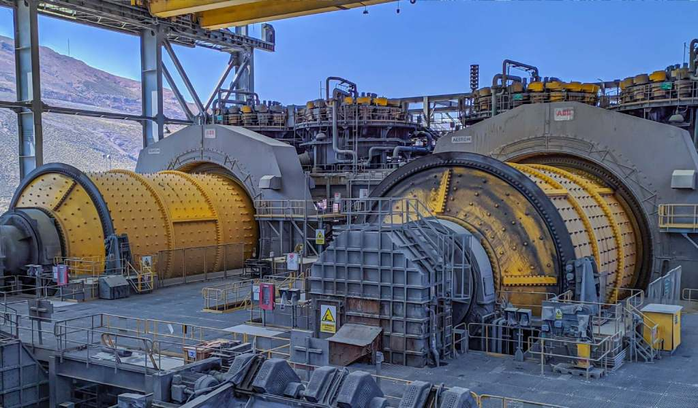

Reducción de tamaño
Por qué se muele, cómo se rompe un sólido, cuánta energía cuesta y cómo se mide lo que sale del molino. Con minerales, granos, biomasa y residuos agroindustriales.
Esta lectura trata de la reducción de tamaño, también llamada conminución: convertir trozos grandes de un sólido en partículas de un tamaño controlado. Es una de las operaciones mecánicas más comunes de la industria y una de las que peor aprovechan la energía. La recorrerá con materiales muy distintos entre sí: la caliza de una cementera, el trigo de un molino harinero, el rastrojo de maíz de una planta de pellets y las hojas o cáscaras frescas de una planta aromática.
- Explicar para qué se reduce el tamaño de un sólido y por qué el producto siempre es una distribución
- Relacionar cada mecanismo de fractura con los equipos que lo aplican y con el material que conviene a cada uno
- Estimar la energía de molienda con la ley de Bond y reconocer cuándo esa ley no sirve
- Estimar la energía de un material húmedo o fibroso por consumo específico, en la base correcta
- Construir la curva acumulada de un tamizado, leer d50 y d80 y ajustar el modelo de Rosin-Rammler
- Justificar el tamaño de partícula de un lecho por el que pasa un fluido y escoger el equipo y el transporte del sólido
En esta lectura

A lo largo del texto encontrará marcadores numerados como este. Pase el cursor por encima (o tóquelo) y aparecerá la fuente completa. El listado ordenado está al final, en Referencias.
1. Por qué se reduce el tamaño
La reducción de tamaño, o conminución, transforma un sólido en partículas más pequeñas. Se hace por alguna de estas razones, y casi siempre por más de una a la vez:
- Aumentar el área superficial. Las reacciones heterogéneas, la disolución, la lixiviación, la extracción con un solvente o con vapor y el secado ocurren en la superficie del sólido. Más área y caminos internos más cortos aceleran todas esas operaciones.
- Obtener un tamaño especificado. El cemento, los pigmentos, la harina y muchos medicamentos se venden con una granulometría definida, y la operación siguiente también pide la suya: un horno de carbón pulverizado, una peletizadora de biomasa, una columna de extracción.
- Liberar un componente valioso. En minería se muele la roca para separar el mineral de interés de la ganga, el material estéril. En una semilla o una hoja, romper los tejidos deja expuesto el aceite o el aroma que guardan sus células.
- Facilitar el manejo. Partículas más pequeñas y uniformes se transportan, se dosifican y se mezclan mejor.
- Dar propiedades al producto, como la textura de un alimento o la capacidad de compactación de un polvo farmacéutico.
Para una esfera de diámetro D, el área por unidad de volumen vale a_v = 6/D. Si un sólido de 50 mm se reduce a partículas de 100 µm, el diámetro cae 500 veces y el área de la misma masa se multiplica por 500. Por eso la molienda es irreemplazable en hidrometalurgia, en catálisis heterogénea y en la extracción de compuestos de un tejido vegetal: sin esa superficie, la operación siguiente se vuelve lentísima.
Un molino casi nunca entrega partículas de un solo tamaño. Entrega una distribución de tamaños, y lo que se especifica, se mide y se controla es esa distribución: por tamizado, análisis de imagen o difracción láser. La sección 6 explica cómo se lee.
2. Mecanismos de fractura
Para reducir el tamaño de un sólido hay que aplicarle un esfuerzo que supere su resistencia. Los cuatro mecanismos fundamentales son compresión, impacto, atrición y corte. Cada uno conviene a cierta combinación de dureza, friabilidad, estructura y tamaño de partícula. Recórralos con las pestañas.
Fuerzas opuestas y lentas aplastan el sólido hasta superar su resistencia a la compresión. Es el mecanismo de la reducción gruesa de materiales duros y frágiles, la etapa primaria de una planta de conminución.
- Equipos típicos: trituradoras de mandíbulas, giratorias y de rodillos.
- Material ideal: rocas duras y frágiles, no demasiado abrasivas: caliza, cuarzo, mineral de hierro.
- Ejemplos industriales: minería primaria, canteras, primera etapa del cemento, reciclaje de concreto.
- Relación de reducción típica: 3:1 a 8:1 por etapa.
Un golpe súbito y rápido transfiere energía cinética a la partícula, y las grietas se propagan de golpe. La partícula se rompe por la inercia de su propia masa frente al impacto.
- Equipos típicos: molinos de martillos, trituradoras de impacto, pulverizadores.
- Material ideal: frágil y de dureza media: carbón, fosfatos, caliza, granos secos, biomasa seca.
- Ejemplos industriales: carbón para calderas, alimento balanceado, fertilizantes, pellets de madera.
- Relación de reducción típica: 10:1 a 40:1.
Fuerzas de cizalla entre las partículas y las superficies del equipo, o entre las partículas mismas. El material se gasta por rozamiento. Es el mecanismo de la molienda fina, donde hay que crear mucha superficie nueva.
- Equipos típicos: molinos de discos, de bolas, de barras y coloidales.
- Material ideal: amplio, duros y semiduros: cemento, pigmentos, minerales metálicos, granos.
- Ejemplos industriales: molienda de clínker, beneficio de minerales, principios activos farmacéuticos, harinas finas.
- Relación de reducción típica: 20:1 a 100:1 en molinos de bolas largos.
Una cuchilla concentra la fuerza en una línea estrecha y secciona el material. A diferencia de la fractura frágil, el corte sirve para materiales que se deforman plásticamente, que son fibrosos o que están húmedos: ahí un golpe aplasta la partícula sin romperla.
- Equipos típicos: molinos de cuchillas con criba, desgarradores de dos ejes, picadoras, granuladores.
- Material ideal: blando, elástico, fibroso o húmedo: plásticos, caucho, textiles, forrajes, hojas, cáscaras y pulpas de fruta.
- Ejemplos industriales: reciclaje de plásticos y llantas, residuos de alimentos, forraje picado, preparación de plantas aromáticas.
- Relación de reducción típica: la fija la criba o la separación entre cuchillas; es común entre 5:1 y 20:1.
En la mayoría de los equipos industriales los mecanismos actúan juntos y uno de ellos predomina, según el diseño del equipo y el material. Un molino de martillos golpea y además desgasta por roce; un molino de rodillos comprime y, si los rodillos giran a distinta velocidad, también cizalla.
En minería no se muele hasta un tamaño arbitrario: se muele hasta el tamaño de liberación, el tamaño al que las partículas del mineral valioso quedan en su mayoría separadas de la ganga. Moler más fino gasta energía sin beneficio metalúrgico y aumenta los ultrafinos, que son difíciles de recuperar por flotación. Es una de las decisiones económicas más importantes del diseño de una planta concentradora, y tiene su equivalente en cualquier industria: moler hasta donde la operación siguiente lo pide, y no más.
3. Equipos de reducción de tamaño
Una forma común de clasificar los equipos es por el tamaño del producto que entregan: trituradoras para la reducción gruesa, molinos para la intermedia y la fina, y un grupo aparte con las cortadoras, que trabajan los materiales que no se fracturan, y los molinos de ultrafinos. Recorra cada grupo y haga clic en cada equipo para ver su descripción, sus aplicaciones y su animación o foto.
Tabla 1. Rangos típicos de relación de reducción y tamaño de producto por tipo de equipo. Úsela para acotar qué equipos considerar según el salto F/P que necesita.
| Equipo | Relación de reducción | Tamaño de producto | Notas |
|---|---|---|---|
| Trituradora de mandíbulas | 3:1 a 7:1 | 50-300 mm | Primaria |
| Trituradora giratoria | 4:1 a 8:1 | 25-200 mm | Primaria de alta capacidad |
| Rodillos lisos | 2:1 a 4:1 | 5-50 mm | Secundaria, pocos finos |
| Molino de martillos | 10:1 a 40:1 | 0,5-25 mm | Frágiles y fibrosos secos |
| Molino de bolas | 20:1 a 100:1 | 10-200 µm | El caballo de batalla de la molienda fina |
| Molino de barras | 15:1 a 50:1 | 0,3-2 mm | Menos finos que el de bolas |
| Molino de chorro de gas | no aplica | < 10 µm | Sin medios de molienda, sin contaminación metálica |
| Molino de cuchillas | 5:1 a 20:1 | 1-20 mm | Fibrosos, plásticos, húmedos; tamaño fijado por la criba |
| Desgarrador de dos ejes | la fija el corte de las cuchillas | 10-100 mm | Baja velocidad y mucho torque; trozos grandes y heterogéneos |
Ningún equipo convierte un bloque de 1 m en polvo de 100 µm de una vez: una relación de reducción de 10⁴:1 es imposible en una sola máquina. Por eso las plantas se diseñan en cascada: trituración primaria, secundaria, molienda gruesa en barras, molienda fina en bolas y, a veces, una etapa ultrafina. Cada etapa trabaja en su rango óptimo de reducción. En los materiales que se cortan pasa lo mismo: un desgarrador abre los trozos grandes y un molino de cuchillas con criba lleva el producto al tamaño final.
4. Energía y leyes de la conminución
La reducción de tamaño aprovecha muy mal la energía: la que queda como superficie nueva rara vez pasa del 1-2 % de la que entrega el motor. El resto se disipa como calor, ruido y deformación elástica del sólido y del equipo. Para estimar la energía se usan tres leyes empíricas clásicas y una formulación general que las reconcilia. Las tres valen para materiales que se fracturan; la sección 5 trata los que no.
Postulado: la energía E es proporcional a la superficie nueva creada. Ajusta bien a la molienda fina, donde crear superficie domina el costo energético.
- x₁, x₂: tamaños promedio de la alimentación y del producto.
- K_R: constante empírica del material y del equipo.
- Cuándo aplica: molienda fina, por debajo de unos 100 µm.
- Limitaciones: sobreestima la energía de la trituración gruesa, y la constante depende del equipo.
Postulado: la energía es proporcional a la relación de reducción: romper una partícula en fragmentos geométricamente semejantes cuesta el mismo trabajo específico, cualquiera que sea su tamaño.
- K_K: constante empírica del material. La razón x₁/x₂ es la relación de reducción, así que la energía depende solo de ese cociente y no de los tamaños absolutos: llevar 100 mm a 10 mm cuesta lo mismo que llevar 10 mm a 1 mm.
- Cuándo aplica: trituración gruesa, con alimentación de centímetros y producto de milímetros.
- Limitaciones: subestima la energía de la molienda fina, porque ignora el costo de la superficie nueva.
Postulado: la energía es proporcional a la longitud de las grietas nuevas, que crece con el inverso de la raíz del tamaño. Es un término medio entre Rittinger y Kick, y en el rango industrial de molienda funciona muy bien.
- W_i: índice de trabajo de Bond, la energía para reducir el material, partiendo de un tamaño muy grande, a un P80 de 100 µm. Se mide en un ensayo normalizado en un molino de bolas de laboratorio.
- F80, P80: tamaños por los que pasa el 80 % de la alimentación y del producto, en micrómetros.
- Unidades: E sale en las mismas unidades de W_i. La tabla clásica de Bond viene en kWh por tonelada corta (907 kg); en esta lectura todo va por tonelada métrica, que es 1,102 veces mayor.
- Cuándo aplica: molienda intermedia, con alimentación de milímetros y producto de unos 100 µm, en materiales que se fracturan. Es la ley más usada para dimensionar molinos de bolas y de barras y para comparar circuitos.
Calculadora de la ley de Bond
Ajuste W_i, F80 y P80 para estimar la energía específica E, en kWh por tonelada métrica. Los campos aceptan coma o punto decimal.
Materiales de referencia (fijan el Wi)
Energía específica
11,51 kWh/t
Relación de reducción de 100:1.
Relación de reducción
100:1
Explorador del índice de trabajo de Bond
82 materiales de la tabla clásica de Bond que recoge el Perry, por tonelada métrica. Busque, filtre y haga clic en una fila para cargar su W_i en la calculadora de arriba.
Conversión: 1 kWh/t = 3,6 kJ/kg. Son valores medios de referencia: el mismo material cambia con el yacimiento, la humedad y el tratamiento previo, y para diseñar se mide el Wi del material real con el ensayo de Bond. Ninguna fila es un material húmedo o fibroso: esos no tienen índice de trabajo (sección 5).
Hukki observó que ninguna de las tres leyes clásicas es universal y propuso una forma generalizada en la que el exponente depende del tamaño de partícula:
- n ≈ 1: trituración gruesa (Kick).
- n ≈ 1,5: molienda intermedia (Bond).
- n ≈ 2: molienda fina (Rittinger).
Integrada entre x₁ y x₂, la ecuación da cada una de las tres leyes como caso particular. Explica por qué ninguna ley clásica sirve en todos los rangos y por qué la industria divide la reducción en etapas, con equipos distintos.
Eficiencia energética
1-2%
Energía que queda como superficie nueva (γ ΔA) frente a la que entrega el motor. El resto es calor, ruido y deformación elástica.
Tres palancas para gastar menos
No moler de más. Clasifique y saque el fino antes de volver a moler: la energía que se gasta en partículas que ya cumplen se pierde.
Escoja el mecanismo correcto. Compresión para duros y frágiles, impacto para frágiles de dureza media, atrición para finos, corte para blandos, fibrosos y húmedos.
Reparta la reducción en etapas. Cada equipo en su rango de reducción, sin forzar relaciones extremas.
Rango de aplicación de cada ley:
Hukki las une como casos particulares de una misma ecuación diferencial.
4.1 · Ejemplo resuelto: energía de molienda con Bond
Una cementera muele caliza. Haga clic en Mostrar siguiente paso para avanzar; intente calcular cada paso antes de verlo.
Enunciado
Se quieren moler 100 t/h de caliza con F80 = 10 mm en un molino de bolas, para obtener un producto con P80 = 100 µm. Para la caliza, W_i = 12,8 kWh por tonelada métrica.
Objetivo: calcular la energía específica E y la potencia que debe entregar el molino.
1. Datos y unidades
- Caudal: ṁ = 100 t/h.
- F80 = 10 mm = 10 000 µm.
- P80 = 100 µm.
- W_i = 12,8 kWh/t, por tonelada métrica. La tabla clásica trae 11,6 por tonelada corta: es la misma energía por unidad de masa, en otra unidad.
La ecuación de Bond pide F80 y P80 en micrómetros.
2. La ecuación de Bond
3. Energía específica
Unos 11 kWh por tonelada: el orden de magnitud de la molienda fina de caliza en una cementera.
4. Potencia
Es la potencia que entra a la fractura. El motor se escoge mayor, porque la transmisión y las pérdidas mecánicas piden un margen de 1,3-1,5 veces: entre 1,5 y 1,7 MW.
5. Interpretación
De ese megavatio y medio, la energía que queda como superficie nueva es una fracción mínima. Casi todo se vuelve calor: el molino se calienta y a veces hay que enfriarlo. Por eso, en muchas minas, la conminución es la operación que más energía consume.
Lección: hay dos formas de bajar el consumo. No moler más fino de lo necesario, y clasificar y devolver al molino solo el grueso, para no volver a moler el fino que ya cumple.
5. Materiales húmedos, fibrosos y aromáticos
Las leyes de la sección anterior suponen un sólido frágil: uno que acumula energía elástica y se parte cuando una grieta crece. Una buena parte de los sólidos que muele la industria de alimentos, de biomasa y de residuos no se comporta así. Una hoja fresca, la cáscara de una fruta, el rastrojo de maíz, la pulpa de café, el bagazo de caña o un trozo de carne se doblan y se aplastan antes de romperse. Con un golpe se deforman; para reducirlos hay que cortarlos o desgarrarlos.
5.1 · No tienen índice de trabajo
El índice de Bond se mide con un ensayo en un molino de bolas, sobre material seco y frágil. Un material fibroso o húmedo no responde a ese ensayo: en el molino de bolas se apelmaza o se enreda, y el número que saldría no describiría lo que hace el equipo industrial que de verdad lo procesa. Por eso no hay índices de Bond publicados para materiales húmedos o fibrosos, y no se deben inventar: un W_i supuesto para una cáscara o un forraje da una energía sin sustento.
5.2 · La energía se estima por consumo específico
Para estos materiales la energía se estima con el consumo específico e: los kilovatios hora que gasta un equipo concreto por tonelada procesada, medidos en una prueba piloto o reportados por el fabricante o por la literatura para un material parecido, con un tamaño de criba parecido. La potencia sale directo:
El consumo específico no es una propiedad del material solo: depende del equipo, de la abertura de la criba (más fina, más energía) y de la humedad. Un estudio con un molino de martillos y criba de 3,2 mm midió 11,0 kWh/t para el rastrojo de maíz y 27,6 kWh/t para el pasto switchgrass, con el mismo equipo y la misma criba; en las cuatro biomasas del estudio el consumo subió al cerrar la criba. Si un dato publicado viene con otro equipo, otra criba u otra humedad, hay que decirlo y justificar por qué sirve.
Un consumo «por tonelada» puede referirse a la tonelada tal como llega, con su agua, o a la tonelada de sólido seco. Con un material de humedad x_w en base húmeda, o w = x_w/(1 − x_w) kilos de agua por kilo de sólido seco, la conversión es:
Con una pulpa de fruta de 80 % de humedad, un consumo de 6 kWh por tonelada tal como llega son 30 kWh por tonelada de sólido seco (los dos números son ilustrativos). Confundir las bases cambia la potencia por un factor de cinco.
5.3 · El agua cambia de papel
En un mineral frágil, un poco de agua ayuda: la molienda húmeda en un molino de bolas gasta menos que la seca y no levanta polvo. En un material fibroso el agua hace lo contrario en los equipos de impacto. El material húmedo se aplasta contra los martillos, se pega a las paredes y tapona la criba, y el consumo sube. Por eso los molinos de martillos trabajan biomasa seca, y los materiales frescos o húmedos van a equipos de corte: molinos de cuchillas con criba, desgarradores de dos ejes, picadoras y refinadores de discos.
5.4 · Los volátiles se pierden con el calor
Casi toda la energía de la molienda termina como calor, y ese calor sube la temperatura del material. En las especias, las hierbas, las semillas oleaginosas y las plantas aromáticas, el aroma está en aceites volátiles que se evaporan cuando el material se calienta. Moler pimienta negra en un molino convencional hace perder parte de su aceite esencial; molerla en frío, con nitrógeno líquido, retiene más aceite y más monoterpenos.
El mismo razonamiento vale para el secado previo. Secar un material antes de molerlo lo vuelve frágil y facilita la molienda, pero si lo que se quiere recuperar es volátil, el secado se lleva una parte con el agua. Cuando el producto de interés es un aroma o un aceite volátil, el material suele procesarse fresco o con un secado suave y controlado, y se reduce con equipos de corte, que calientan menos que los de impacto.
- No use Bond, Kick ni Rittinger: no tiene índice de trabajo.
- Estime la energía por consumo específico, con una fuente para un material y un equipo parecidos, y diga en qué base viene.
- Escoja un equipo de corte; los de impacto se taponan con la humedad.
- Si el producto es volátil, controle la temperatura y piense dos veces antes de secar.
5.5 · Ejemplo: potencia de un molino de martillos para biomasa
Una planta de pellets muele 5 t/h de rastrojo de maíz seco en un molino de martillos con criba de 3,2 mm. Con el consumo específico medido para ese material y esa criba, 11,0 kWh/t:
Esa es la energía que consume la molienda. El motor se escoge con margen sobre esa cifra, como en el ejemplo de Bond, y la criba se revisa contra lo que pide la peletizadora: si se cerrara a una abertura menor, el consumo por tonelada subiría.
6. Análisis de tamaño de partícula
Todo lo anterior depende de poder responder una pregunta: ¿qué tamaño tiene la alimentación y qué tamaño tiene el producto? Como el producto de la conminución es siempre una distribución, hace falta una manera de describirla. El método clásico, y todavía el más usado en la industria, es el análisis por tamizado.
6.1 · Tamizado y series de tamices
Se pasa una muestra de masa conocida por una pila de tamices ordenados con la abertura más grande arriba, con una bandeja ciega al fondo; se agita un tiempo normalizado y se pesa el material retenido en cada malla. Las aberturas siguen series geométricas: en la serie de Tyler cada tamiz tiene una abertura √2 veces la del siguiente más fino, y hay series más cerradas, con razón ⁴√2.
- Número de malla (mesh): aberturas por pulgada lineal. A más número de malla, abertura más pequeña. Una malla 200 (unos 75 µm) es mucho más fina que una malla 10 (2 mm).
- Normas: la serie de Tyler, la ASTM E11 y la ISO 565 fijan las aberturas exactas y su equivalencia entre malla y micrómetros.
- Límite práctico: el tamizado en seco es confiable hasta unos 38-45 µm. Por debajo se tamiza en húmedo o se usa difracción láser, sedimentación o análisis de imagen.
Tabla 2. Equivalencias aproximadas entre malla y abertura. Los valores exactos dependen de la norma.
| Malla (mesh) | Abertura aproximada | Uso típico |
|---|---|---|
| 4 | 4,75 mm | Grava fina, producto de trituración secundaria |
| 10 | 2,00 mm | Límite de la arena gruesa |
| 35 | 500 µm | Arena media, sémola |
| 100 | 150 µm | Producto de molienda gruesa, harina |
| 200 | 75 µm | La frontera clásica de «malla 200» en minería y cemento |
| 325 | 45 µm | Límite práctico del tamizado en seco |
| 400 | 38 µm | Tamizado en húmedo o técnicas instrumentales |
6.2 · De las masas retenidas a la curva acumulada
Con las masas retenidas se construyen dos distribuciones complementarias:
- Distribución diferencial: el porcentaje de la masa que cae en cada intervalo de tamaño. Va contra un tamaño representativo del intervalo, por ejemplo la media geométrica de sus dos aberturas.
- Distribución acumulada pasante: el porcentaje de la masa más fino que una abertura dada. Va contra la abertura del tamiz, y de ella se leen los percentiles.
Sobre la curva acumulada pasante se definen los descriptores que usan las leyes de la conminución y las especificaciones de producto:
- d50, el tamaño mediano: la abertura por la que pasa el 50 % de la masa.
- d80 (F80 en la alimentación, P80 en el producto): la abertura por la que pasa el 80 %; es la que pide la ley de Bond.
- d10 y d90, que miden el ancho de la distribución, por ejemplo con el span, (d90 − d10)/d50.
P80 = 100 µm significa que el 80 % de la masa del producto pasa por 100 µm, es decir, es más fino que 100 µm, y solo el 20 % es más grueso. Confundir pasante con retenido invierte la curva y arruina el cálculo de Bond.
6.3 · Ejemplo: el d80 de un tamizado
Una muestra de 100 g de un producto de molienda se tamiza con los resultados de la Tabla 3. Se calcula el porcentaje retenido, el acumulado retenido y, por diferencia, el acumulado pasante. El d80 es la abertura en la que la curva pasante cruza el 80 %.
Tabla 3. Análisis granulométrico de la muestra. El acumulado pasante es 100 menos el acumulado retenido.
| Abertura (mm) | % retenido | Acumulado retenido (%) | Acumulado pasante (%) |
|---|---|---|---|
| 1,18 | 5 | 5 | 95 |
| 0,85 | 12 | 17 | 83 |
| 0,60 | 18 | 35 | 65 |
| 0,425 | 22 | 57 | 43 |
| 0,30 | 18 | 75 | 25 |
| 0,212 | 13 | 88 | 12 |
| 0,150 | 7 | 95 | 5 |
| Fondo (< 0,150) | 5 | 100 | 0 |
El 80 % pasante cae entre 0,85 mm (pasa el 83 %) y 0,60 mm (pasa el 65 %). Interpolando linealmente entre esos dos puntos:
Ese valor es el que entraría como F80 o P80 en la ecuación de Bond. De la misma forma, d50 sale de interpolar para el 50 % pasante, entre 0,60 y 0,425 mm: unos 0,48 mm. Como las aberturas forman una serie geométrica, también se puede interpolar sobre el logaritmo de la abertura, que es lo que hace el cuaderno del Taller 2; para este d80 da 0,80 mm.
6.4 · Modelos de distribución
Un tamizado da unos pocos puntos. Para interpolar con criterio, comparar productos o meter la distribución en un cálculo, se le ajusta un modelo de dos parámetros, uno de tamaño y otro de dispersión. Los tres más usados son estos:
Tabla 4. Modelos de distribución de tamaño. X es la fracción acumulada pasante y R = 1 − X la retenida.
| Modelo | Expresión | Cómo se linealiza | Dónde suele ajustar |
|---|---|---|---|
| Rosin-Rammler | X = 1 − exp[−(d/d63)^n] | ln ln(1/R) contra ln d | Productos de molienda y trituración; nació con el carbón pulverizado |
| Log-normal | X = Φ[(ln d − ln d50)/ln σg] | Papel de probabilidad: Φ⁻¹(X) contra ln d | Cristalización, aerosoles, muchos productos molidos |
| Gates-Gaudin-Schuhmann | X = (d/k)^m | ln X contra ln d | Materiales triturados, sobre todo en la zona fina |
En Rosin-Rammler, d63 es el tamaño por el que pasa el 63,2 % de la masa, porque con d = d63 la retenida vale e⁻¹ = 0,368. El exponente n mide la dispersión: cuanto mayor, más angosta la curva. Tomando dos veces el logaritmo, el modelo se vuelve una recta:
La Figura 1 hace ese ajuste con los datos de la Tabla 3. La pendiente de la recta es n = 1,94; la recta cruza el cero en ln d63 = −0,48, así que d63 = 0,62 mm, con R² = 0,993. Con el modelo, el d80 sale de despejar X = 0,8: d80 = d63 (ln 5)^(1/n) = 0,79 mm, muy cerca de los 0,81 mm de la interpolación.
Además de los percentiles, hay descriptores que resumen la distribución para usos concretos:
- Diámetro de Sauter, d32 = 1/Σ(xᵢ/dᵢ): el diámetro de una esfera con la misma relación de volumen a área que todo el material. Es el que importa cuando manda la superficie, como en la transferencia de masa o de calor, y el que aparece en la caída de presión de un lecho (sección 7).
- Desviación estándar geométrica, σg = √(d84/d16): la dispersión de una distribución log-normal. Un producto con σg cercano a 1 es casi uniforme.
- Coeficientes de uniformidad y de curvatura, CU = d60/d10 y CC = d30²/(d60 d10), que vienen de la mecánica de suelos y se usan para lechos y filtros.
Dos productos con el mismo d80 pueden comportarse muy distinto si uno es de banda angosta y el otro trae muchos ultrafinos o mucho grueso. Por eso una especificación rara vez es un solo número: se pide la curva completa o varios percentiles, como d10, d50 y d90, o un límite de finos. En un circuito de molienda de minerales el control diario se hace, en la práctica, vigilando el porcentaje que pasa la malla 200.
7. El tamaño de partícula en un lecho
Muchas operaciones hacen pasar un fluido a través de un lecho de partículas: la lixiviación de un mineral en pilas, la extracción de café soluble en columnas de percolación, un reactor catalítico de lecho fijo, el secado de granos en un silo con aire o la extracción de un aceite de un lecho de material vegetal con vapor o con un solvente. En todas, el tamaño de partícula se escoge con el mismo equilibrio entre dos efectos que tiran en sentidos opuestos.
7.1 · Más fino acelera la transferencia
Lo que se extrae, se disuelve o reacciona tiene que recorrer el camino entre el interior de la partícula y su superficie. Si la difusión interna manda, el tiempo característico crece con el cuadrado de la distancia que hay que recorrer, t ∼ L²/D_ef, donde L es del orden del tamaño de la partícula. Reducir el tamaño a la mitad reduce ese tiempo a una cuarta parte, y además multiplica por dos el área por unidad de volumen.
7.2 · Más fino tapa el lecho
El fluido que atraviesa el lecho pierde presión. La ecuación de Ergun la estima para un lecho de partículas de diámetro d_p, esfericidad Φs y porosidad ε, con un fluido de viscosidad μ y densidad ρ que avanza a la velocidad superficial u:
Dos lecturas de esa ecuación deciden el tamaño:
- El tamaño entra al cuadrado. En flujo lento, partículas de la mitad del tamaño cuadruplican la caída de presión.
- La porosidad pesa todavía más. El factor (1−ε)²/ε³ vale 5,6 con ε = 0,40 y 9,9 con ε = 0,35: casi el doble por cinco puntos de porosidad. Los finos se meten en los huecos entre partículas grandes, bajan la porosidad y, además, migran con el flujo y se acumulan donde el lecho se cierra.
Un lecho con mucha caída de presión no deja pasar el fluido de forma pareja. El fluido busca los caminos de menor resistencia y abre canales: una parte del lecho queda lavada en exceso y otra no se toca. Las partículas muy deformables o fibrosas, además, se compactan bajo su propio peso y cierran el lecho con el tiempo.
Un tamaño central (un d50 o un d80) que fije la velocidad de la transferencia, un límite de finos que proteja la permeabilidad y un límite de gruesos que evite partículas que no alcancen a agotarse en el tiempo de operación. En lixiviación en pilas, por ejemplo, el mineral se tritura y se aglomera para que los finos no tapen la pila; en una columna de percolación de café la molienda es más gruesa que la de una cafetera de filtro, por la misma razón. Un análisis granulométrico completo, con su σg y su fracción fina, es lo que permite revisar las tres partes.
8. Selección del equipo y manejo del sólido
Además de la energía, varios factores pesan en la operación y la selección del equipo, y el sólido molido todavía tiene que llegar a la operación siguiente.
8.1 · Propiedades del material
Las seis propiedades del material que más influyen en la selección del equipo. Haga clic en cada una para ver el detalle y ejemplos industriales.
Tabla 5. Escala de dureza de Mohs: cada mineral raya a los de número menor. Es una escala de orden, no de proporción: el diamante (10) es mucho más que el doble de duro que la apatita (5).
| Mohs | Mineral de referencia | Referencia cotidiana o industrial |
|---|---|---|
| 1 | Talco | Se raya con la uña |
| 2 | Yeso | La uña lo raya (uña: unos 2,5) |
| 3 | Calcita | Caliza y mármol; una moneda de cobre lo raya |
| 4 | Fluorita | Se raya fácil con una navaja |
| 5 | Apatita | Roca fosfórica; una navaja la raya con esfuerzo |
| 6 | Ortoclasa (feldespato) | Raya el vidrio de ventana (unos 5,5) |
| 7 | Cuarzo | Arena de sílice; raya el acero de una lima (unos 6,5) |
| 8 | Topacio | Muy abrasivo |
| 9 | Corindón | Alúmina de los abrasivos y de los medios de molienda cerámicos |
| 10 | Diamante | El material natural más duro |
8.2 · Molienda seca o molienda húmeda
Una decisión transversal: la molienda puede hacerse en seco o con el material suspendido en agua u otro líquido. Cada modo tiene ventajas y limitaciones.
Molienda seca
Ventajas: el producto sale seco, listo para empacar o transportar; no hay efluentes líquidos; sirve cuando el material es sensible al agua, como el cemento o la cal.
Desventajas: exige captar el polvo; más desgaste; el impacto rinde menos porque las partículas rebotan; el material se calienta.
Molienda húmeda
Ventajas: en minerales frágiles gasta menos energía, porque el agua amortigua y evacúa los finos; no hay polvo; se acopla bien con una flotación o una lixiviación aguas abajo.
Desventajas: hay que manejar pulpa y desaguarla con espesadores y filtros; hay corrosión; el producto sale húmedo y, si hace falta, hay que secarlo. No aplica a un material fibroso que ya llega húmedo: ese se corta (sección 5).
8.3 · Variables de proceso
- Tamaño de la alimentación y del producto: definen la relación de reducción y, con ella, el tipo y el número de etapas.
- Capacidad requerida, en toneladas por hora.
- Especificación del producto: distribución de tamaño (d50, d80, porcentaje pasante en una malla, límite de finos), forma de partícula, temperatura máxima.
- Costos: de capital (el equipo) y de operación (energía, mantenimiento, medios de molienda, revestimientos, cuchillas y cribas).
8.4 · Explorador de selección
Configure las propiedades del material y obtendrá una lista de equipos recomendados como punto de partida. No reemplaza un análisis detallado, pero acota rápido las opciones razonables.
Explorador de selección de equipo
Configure el material y el tamaño de la alimentación. Verá los equipos recomendados como primera aproximación.
Equipos recomendados
8.5 · Transporte del sólido molido
El sólido que sale del molino tiene que llegar a la operación siguiente, y la forma de moverlo depende de las mismas propiedades que decidieron el equipo de reducción:
- Banda transportadora: grandes caudales y distancias largas, casi cualquier material, incluidos los húmedos y pegajosos; sube pendientes moderadas.
- Transportador de tornillo: distancias cortas, encerrado (sin polvo ni pérdidas de aroma), sirve además para dosificar; maneja materiales húmedos y fibrosos. Desgasta con abrasivos.
- Elevador de cangilones: para subir el material en vertical. Pide un material que llene y vacíe bien los cangilones.
- Transporte neumático: el sólido viaja en una corriente de aire por una tubería; es limpio y flexible para polvos secos y de flujo libre, como el azúcar o la harina, pero un material húmedo o fibroso se apelmaza y tapona la línea.
Un tornillo se dimensiona con su capacidad volumétrica: el área de la sección del tornillo, el paso p, la velocidad de giro N y una fracción de llenado φ que depende del material, más baja para los abrasivos y los que fluyen mal:
donde D es el diámetro del tornillo, de el del eje y ρb la densidad a granel del material. Esa densidad, y no la del sólido, es la que fija el volumen que hay que mover: la presentación de propiedades de sólidos particulados explica cómo se mide.
8.6 · Consejos prácticos
1. Caracterice bien el material
Antes de calcular, conozca la dureza, la estructura y la humedad de la alimentación. En un material frágil eso incluye el índice de trabajo de Bond; en uno húmedo o fibroso, el consumo específico del equipo que lo corta, con su fuente. Sin esa información, cualquier estimación de energía es una conjetura.
2. Escoja el equipo con criterio
No basta con algo que «rompa» el material. Pesan la eficiencia, el producto que pide la operación siguiente y los costos completos: capital, operación y mantenimiento.
3. Piense en el circuito completo
La reducción de tamaño casi nunca va sola: la acompañan una clasificación (tamices, ciclones o la criba del propio molino) que devuelve el grueso y deja salir el fino, el transporte hasta la operación siguiente y el manejo de los finos que sobran. El diseño es el de todo el sistema: equipo de reducción, clasificador, recirculación y transporte.
Lecturas de referencia
Capítulos de los textos base que cubren la reducción de tamaño y las propiedades de las partículas.
9. Conclusiones
Tres ideas para llevarse de esta lectura.
La primera: se reduce el tamaño para ganar área, liberar lo valioso o cumplir una especificación, y el producto es siempre una distribución. El mecanismo de fractura decide el equipo: compresión e impacto para lo frágil, atrición para lo fino, corte para lo blando, lo fibroso y lo húmedo.
La segunda: la energía de un material que se fractura se estima con la ley de Bond, en micrómetros y en la tonelada que corresponde. La de un material húmedo o fibroso no: ese no tiene índice de trabajo y su energía es el consumo específico de un equipo de corte, con su fuente y en su base. Si el material lleva compuestos volátiles, la temperatura de la molienda y el secado previo pueden costar parte del producto.
La tercera: el tamaño correcto lo fija la operación siguiente. En un lecho por el que pasa un fluido, más fino acelera la transferencia pero cierra el lecho, y por eso la especificación pide un tamaño central, un límite de finos y un límite de gruesos. Para revisarla hay que leer la distribución completa, no un solo número.
En la planta de su equipo la reducción de tamaño es la preparación de la materia prima, antes del arrastre de vapor. La Bitácora 1 le pide justificar el tamaño de esa preparación por lo que necesita el lecho del extractor, escoger el equipo, estimar su energía por consumo específico con su fuente y resolver el transporte del material hasta el extractor. Las secciones 5, 7 y 8.5 le dan el criterio para cada una de esas decisiones; los números salen de su materia prima y de sus fuentes.
Compruebe que puede responder estas preguntas sin volver al texto:
- ¿Por qué un molino de martillos sirve para carbón y para biomasa seca, pero no para una hoja fresca o una pulpa de fruta?
- Una caliza con W_i = 12,8 kWh/t se muele de F80 = 2 mm a P80 = 75 µm. ¿Cuánta energía específica pide, y por qué hay que pasar los tamaños a micrómetros?
- ¿Por qué no se le puede asignar un índice de Bond a un material húmedo y fibroso, y con qué se estima entonces su energía?
- Un proveedor reporta 6 kWh por tonelada de sólido seco para un material de 75 % de humedad. ¿Cuánto es por tonelada tal como llega?
- ¿Qué significa P80 = 100 µm, y qué pasaría con el cálculo de Bond si se leyera como porcentaje retenido?
- En el modelo de Rosin-Rammler, ¿qué representan d63 y n, y cómo se obtienen de un tamizado?
- En un lecho empacado, ¿qué pasa con la caída de presión si el tamaño de partícula se reduce a la mitad, y por qué los finos importan todavía más que el tamaño medio?
- ¿Por qué el transporte neumático no sirve para un material húmedo y fibroso, y qué usaría en su lugar?
10. Referencias
Pase el cursor por cualquier marcador del texto para ver la fuente sin perder el hilo. Aquí está el listado completo, en orden alfabético.
- Bond, F. C. (1952). The third theory of comminution. Transactions of the AIME, 193, 484-494.
- Ergun, S. (1952). Fluid flow through packed columns. Chemical Engineering Progress, 48(2), 89-94.
- Geankoplis, C. J. (2003). Transport processes and separation process principles (4.ª ed.). Prentice Hall.
- Green, D. W., & Southard, M. Z. (Eds.). (2018). Perry's chemical engineers' handbook (9.ª ed.). McGraw-Hill.
- Hukki, R. T. (1961). Proposal for a Solomonic settlement between the theories of von Rittinger, Kick and Bond. Transactions of the AIME, 220, 403-408.
- Mani, S., Tabil, L. G., & Sokhansanj, S. (2004). Grinding performance and physical properties of wheat and barley straws, corn stover and switchgrass. Biomass and Bioenergy, 27(4), 339-352.
- McCabe, W. L., Smith, J. C., & Harriott, P. (2005). Unit operations of chemical engineering (7.ª ed.). McGraw-Hill.
- Murthy, C. T., & Bhattacharya, S. (2008). Cryogenic grinding of black pepper. Journal of Food Engineering, 85(1), 18-28.
- Napier-Munn, T. (2015). Is progress in energy-efficient comminution doomed? Minerals Engineering, 73, 1-6.
- Rhodes, M. (2008). Introduction to particle technology (2.ª ed.). Wiley.
- Rosin, P., & Rammler, E. (1933). The laws governing the fineness of powdered coal. Journal of the Institute of Fuel, 7, 29-36.
- Wills, B. A., & Finch, J. A. (2015). Wills' mineral processing technology (8.ª ed.). Butterworth-Heinemann.